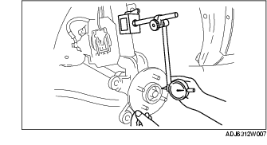

Wheel Bearing Play Inspection
1. Position a dial gauge with a magnetic base against the wheel hub as shown, and measure the wheel bearing axial play.

-
• If it exceeds the specification, replace the wheel bearing.
Front axle maximum wheel bearing play
-
0.05 mm {0.002 in}